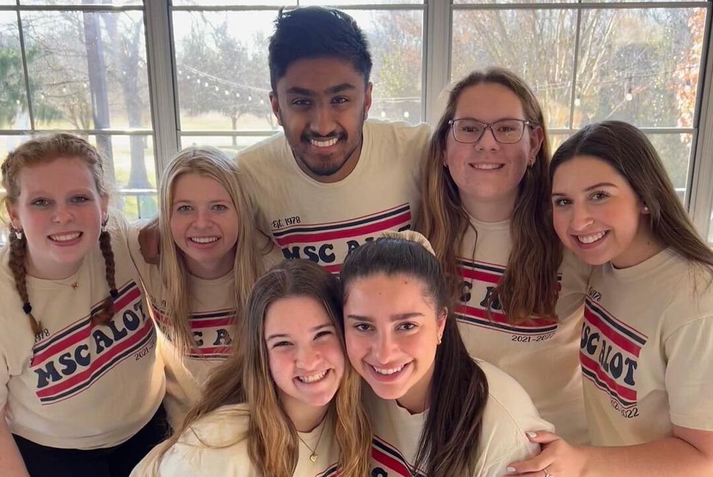
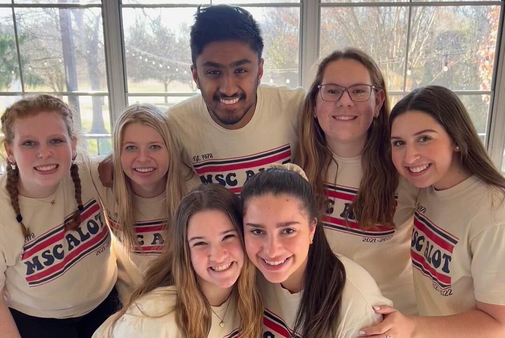

Service and Activities
ΧΨΒ Culture and Service Fraternity
Chi Psi Beta is a fraternity whose main goals are to "create a strong brotherhood" that "assimilates South Asian and American cultures" and "gives back to the community through service projects". As part of Chi Psi Beta, I collaboratively organize and participate in service projects, including community maintainance such as street-cleaning and yardwork. Furthermore, I help organize and work fundraising events, including a formal to raise money for mental health awareness and a blood drive. Our charities are Adopt-A-Street, blood donation, and mental health. Finally, I help set-up and participate in cultural events, such as our fraternity formal and Diwali night. Being part of an accomplished brotherhood with such strong values motivates me to better myself and allows me to build lifelong friends.
Conway-Fitzhugh International Honors Leadership Seminar
I was selected as a part of "30 of Texas A&M University's top incoming freshmen" to engage in academic planning, develop leadership skills, develop a passion for international travel, and learn about the rich culture of Italy through experience. We engaged in the academic planning and leadership training through a seminar class, and during the Spring Break of 2022, we traveled to Italy. We toured Florence, Castiglion Fiorentino, Cortona, Assisi, and Rome, learning in-depth about Catholic and Renaissance art and culture. I made lasting connections, learned skills to help prepare me for both college and my career, and instilled in me a passion for traveling.
Aggie Leaders of Tomorrow (Angel Tree)
As part of the Angel Tree project for Aggie Leaders of Tomorrow, I helped raise funds to buy Christmas gifts for economically disadvantaged children in the Brazos Valley area in Texas for the Salvation Army. I gathered donations, created promotional material, brought awareness about the project to other organizations, and helped set up fundraising sites. Beyond my work for Angel Tree, I participated in leadership and team-building activities along with attending and presenting at organizational events. This experience sparked in me a passion for service, and the supporting community around me taught me invaluable team-building and leadership skills.
 
